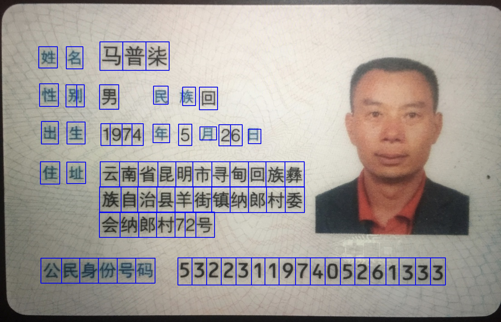
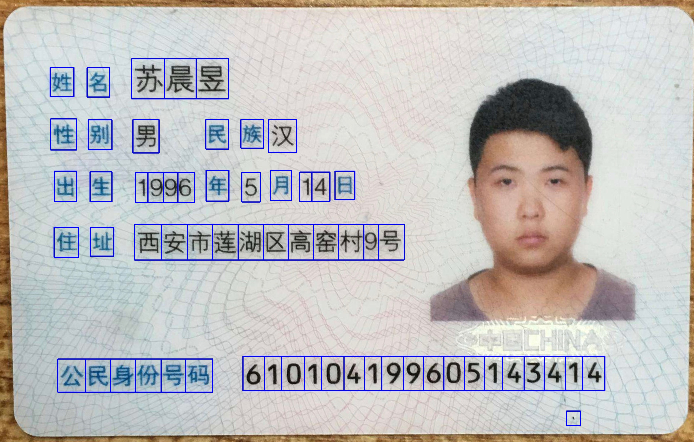

最近项目需求(身份证信息自动识别)，需要对图像中的文本进行定位与提取，这…本汪真心不懂啊. 于是乎怀着忐忑的心情去找L老板唠嗑.
[狗血剧情]
本汪: 老师，这事没做过啊，不知道怎么做啊… (内心os: 您接项目能不能考虑下咱的技术储备啊)
L老板: 不会啊，去学啊! 网上找下资源和论文去吧.
本汪: 哦，好的… (当我没来)
于是乎在google上一番折腾，总算找到了一些相关文献.
可是，大部分Paper的应用场景是自然场景的文本提取(Detecting Text in Natural Scenes)，即从一张自然场景中提取文字片段(如从一张街道餐馆外景的照片中提取餐馆招牌文字). 好吧! 似乎不完全适用，不过咱先试试先.
文献记载的主要方法有两种:
- Maximally Stable Extremal Regions (MSER)，具体请戳这篇文章
- Stroke Width Transform (SWT)，具体请戳这篇文章
- 基于滑动窗口和图像分类的方法. (果断放弃，我可不想自己去标数据!)
接下来就是Coding实现啦. 又是github一顿翻，找了一些源码借鉴，勉强实现了MSER和SWT.
实际测试结果发现原始SWT和MSER效果都奇差啊! (内心崩溃中，仿佛能够遇见L老板那犀利的眼神)
好吧，你俩不是为”身份证文本提取”而生，可以原谅. 作为一只肯专研的科研汪，怎能这样坐以待毙呢.
于是乎又一顿搜索，咦！咱们的任务场景貌似可以用基本的图像处理+规则来弄啊!(果然简单才是美啊!没有人工就没有智能啊!)
于是乎崭新的天地出现啦!!!
代码实现
各位看官看了这么多废话，估计也烦了，为了让大家不拍本汪，必须是上代码的时候了.
这里我们首先新建一个detector.py文件，其中包含一个TextDector类.
|
|
该类使用方法如下:
|
|
具体效果请看下图(测试身份证照片来源于百度图片，如有任何隐私问题，请私信本人)


完整代码(非商用版)请戳我的Github
高能吐槽
最近有些童鞋私信咱，”这程序好多情况不work啊，通用性不是很好啊!能不能优化下?”
这让本汪咋说呢，我只能保证在我的应用场景下work:
- 图片主体95%属于身份证，且基本无倾斜.(从背景中提取身份证区域，并进行倾斜矫正，这种成套解决方案恕不提供，开源的东西，也别要求别太高.)
- 图片质量高且清晰，首先至少要对焦清楚吧，其次你也别来个分辨率300*200的渣渣相片可好?
- 最后，真实应用场景可增加身份证边缘扫描对齐，从而保证图像质量.(别问我有没有代码，这玩意属于ios和android开发，且也不是啥秘密，你能google到!)